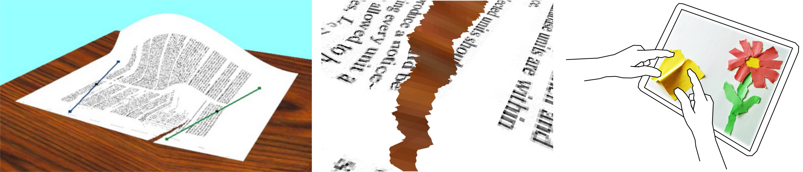

<div class="container">
  <div class="row">
    <main>
      <section class="col-md-12">
        <header>
          <h1>Interactive procedural simulation of paper tearing with sound</h1>
          <h2><small>Thibault Lejemble, Amélie Fondevilla, Nicolas Durin, Thibault Blanc-Beyne, Camille Schreck, Pierre-Luc Manteaux, Paul G. Kry, Marie-Paule Cani </small></h2>
          <h2><small>Motion In Games 2015</small></h2>
          <hr>
        </header>
        <section>
          
          <h2>Summary</h2>
          <p>
            We present a phenomenological model for the real-time simulation of paper tearing and sound. The model uses as input rotations of the hand along with the index and thumb of left and right hands to drive the position and orientation of two regions of a sheet of paper. The motion of the hands produces a cone shaped deformation of the paper and guides the formation and growth of the tear. We create a model for the direction of the tear based on empirical observation, and add detail to the tear with a directed noise model. Furthermore, we present a procedural sound synthesis method to produce tearing sounds during interaction. We show a variety of paper tearing examples and discuss applications and limitations.
          </p>
          <h2>Downloads</h2>
          [<a href= "https://hal.inria.fr/hal-01206764/document">Paper (PDF)</a>] [<a href= "https://hal.inria.fr/hal-01206764/file/Lejemble_MIG2015_IPSPTS.mp4">Movie (MP4, 20.56MB)</a>] [<a href="./IPSPT_MIG2015.bib">Bibtex</a>]
          <h2>Results</h2>
          <iframe width="560" height="315" src="https://www.youtube.com/embed/EiP3fHqtZnk" allowfullscreen></iframe>
        </section>
      </section>
    </main>
  </div>
</div>             
